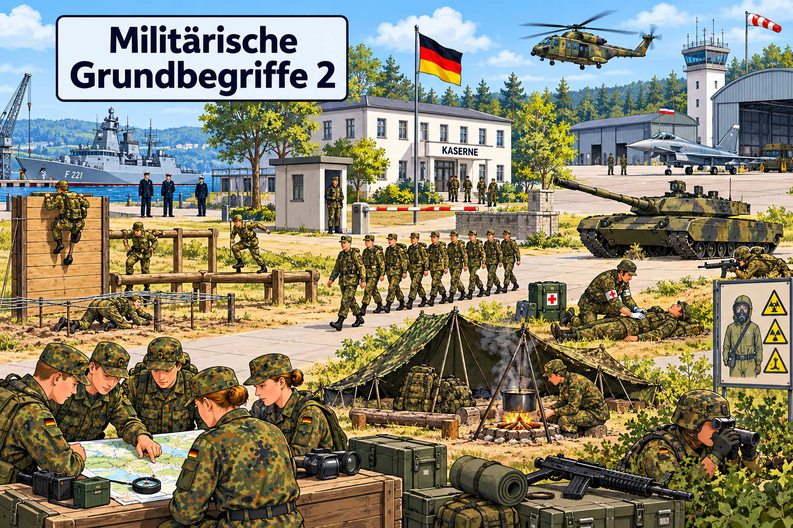

Militärische Grundbegriffe 2
Die Grundausbildung · Deutsch A1/A2

1. Wörter und Bilder zuordnen
Nutzen Sie ein Wörterbuch und ordnen Sie zu! Wählen Sie zu jedem Bild den richtigen Begriff.
2. Artikel ergänzen
Schreiben Sie den Artikel zu den Nomen.
3. Lesetext: Die Grundausbildung bei der Bundeswehr
Lesen Sie nun den Text und beantworten Sie die Fragen unter dem Text.
4. Leseverstehen
Wählen Sie zu jeder Frage die richtige Antwort.
5. Verben – Was machen die Rekruten?
Ergänzen Sie die passenden Verben in der richtigen Form. Jedes Verb wird einmal verwendet.
6. Adjektive – Wie ist die Grundausbildung?
Ergänzen Sie das passende Adjektiv mit der richtigen Endung. Jedes Adjektiv passt einmal.